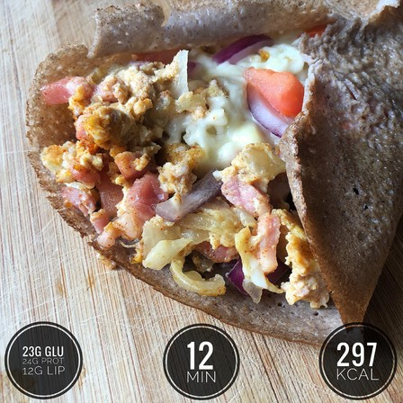
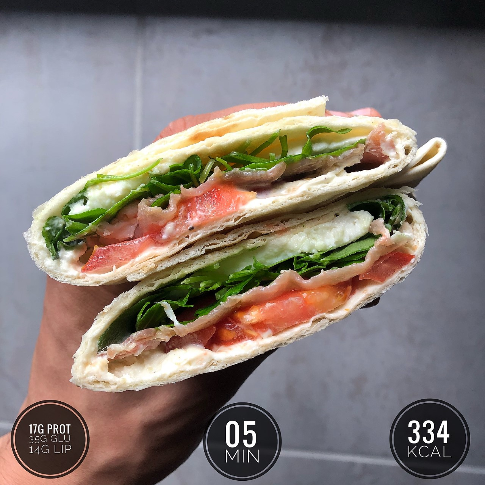
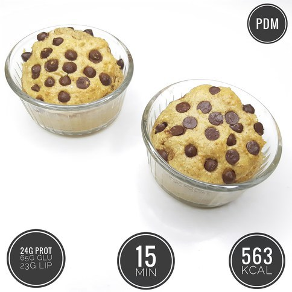

Bruschetta à la viande de Grison
Calories et macronutriments :
450 calories 25 grammes de glucides 38 grammes de protéines 22 grammes de lipides
Ingrédients pour 1 bruschetta :
1 tranche de pain de campagne 50 grammes de viande de Grison 1 carré de fromage frais 50 grammes de tomates cerises Une poignée de roquette 30 grammes de parmesan en copeaux 1 cuillère à soupe d’huile végétale 1 cuillère à café de vinaigre de cidre ou balsamique Quelques pincées de sel Quelques pincées de poivre Quelques pincées de paprika
Préparation :
Faire griller le pain de campagne dans un grille-pain, puis étaler par dessus le carré de fromage frais. Découper les tomates cerises en deux. Ajouter sur la tartine la viande de Grison, les tomates cerises, la roquette et les copeaux de parmesan. Mélange l’huile végétale, le vinaigre, le sel, le paprika et le poivre. Puis recouvrir la bruschetta de ce mélange. Terminé !
Crêpe légère salée
Calories et macronutriments pour 1 crêpe :
297 calories 23 grammes de glucides 24 grammes de protéines 12 grammes de lipides
Ingrédients pour 2 crêpes :
2 galettes de sarrasin/blé noir 2 cuillères à soupe d’huile d’olive 2 œufs 100 grammes d’allumettes de bacon maigre Quelques rondelles d’oignon rouge 1 oignon jaune 1 tomate 60 grammes de fromage râpé allégé à 5-6% de matières grasses Quelques pincées de sel et de poivre 1 cuillère à soupe de piment doux en poudre
Préparation
Faire chauffer une poêle en ajoutant une cuillère à soupe d’huile d’olive. Découper l’oignon jaune en petits morceaux, puis faire revenir le tout dans la poêle pendant 4 minutes à feu doux. Dans un bol, mélanger les œufs. Verser dans la poêle, puis ajouter du sel, du poivre, le piment doux et les allumettes de bacon maigre. Mélanger le tout et laisser cuire 3 minutes en couvrant le tout. Pendant ce temps, découper la tomate en petits morceaux. Faire chauffer une autre grande poêle en versant l’autre cuillère à soupe d’huile d’olive. Déposer la galette de blé noir dans la poêle, puis faire cuire de chaque côté 30 secondes à feux doux. Verser la moitié de la garniture au centre de la galette, de haut en bas. Ajouter la moitié du fromage râpé allégé, des morceaux de tomates et des morceaux d’oignon rouge. Ramener les côtés vers le centre, aplatir légèrement puis laisser cuire 1minute30 à feu doux, en couvrant le tout. Répèter l’opération pour la seconde crêpe. Terminé ! Bon appétit !
One pot pasta au poulet
Calories et Macronutriments :
636 calories 73 grammes de glucides 50 grammes de protéines 16 grammes de lipides
Ingrédients :
100g de pâtes (de préference de farine complète) 100 grammes de tomates cerises 100 grammes d’escalope de poulet Quelques pincées de sel, Quelques pincées de poivre 3 gousses d’ail 1 oignon jaune Basilic 1 cuillère à soupe huile d’olive 30 grammes de parmesan râpé 30 0ml d’eau
Préparation :
Découper les tomates cerises en 2 et l’escalope de poulet en petits cubes. Puis découper les gousses d’ail, le basilic et les oignons en petits morceaux. Déposer les pâtes, les tomates, le poulet, l’ail, le basilic et les oignons dans une grande casserole. Saler et poivrer le tout. Dans la casserole, ajouter l’eau et l’huile d’olive. Fais cuire le tout jusqu’à que toute l'eau ait été pompée (environ 8-10 minutes). Mélanger régulièrement durant la cuisson ! Une fois prêt, saupoudrer le tout de parmesan râpé. C’est prêt ! Bon appétit !
Wrap jambon mozzarella
Calories et macronutriments pour 1 wrap :
334 calories 17 grammes de protéines 35 grammes de glucides 14 grammes de lipides
Ingrédients pour 1 wrap :
Une poignée de mâche/roquette 1 tranche de jambon sec (25 grammes environ) 20 grammes de mozzarella 1/2 tomate (petite) 1 tortilla de blé 1 carré de fromage frais à 0% 1 cuillère à café d’huile d’olive Quelques pincées de poivre Quelques pincées d’ail en poudre
Préparation :
Dans un bol, mélange le Carré Frais, l’huile d’olive, le poivre et l’ail en poudre. Découpe la 1/2 tomate et la mozzarella en rondelles. Pose ta tortilla de blé à plat, puis étale-y ton mélange au Carré Frais. Dépose au-dessus les rondelles de tomate, le jambon, la salade et la mozzarella. Commence par plier légèrement la partie inférieure de la tortilla sur elle-même. Puis ramène les côtés vers le centre. Enfin, ramène la partie supérieure du wrap vers le centre. Aplatis légèrement le tout. Découpe en deux et c’est prêt ! Bon appétit !
Crêpes au chocolat noir
Calories et Macronutriments pour 1 crêpe :
124 calories 16 grammes de glucides 06 grammes de protéines 04 grammes de lipides
Ingrédients pour 5 crêpes :
2 œufs 90 grammes de farine 170ml de lait végétal de son choix 1/2 cuillère à café d’arôme vanille 1 pincée de sel 1 cuillère à café d’huile de coco liquide 1 cuillère à soupe de miel 10 grammes de chocolat noir
Préparation :
Faire chauffer une poêle. Dans un récipient, mélanger la farine et le sel. Puis ajouter les œufs, l’arôme vanille, l’huile de coco et le miel. Verser en 2-3 fois le lait végétal, et mélanger à chaque fois jusqu’à avoir une pâte homogène (pour éviter l’apparition de grumeaux). Verser une louche de pâte dans la poêle, et faire cuire de chaque côté 30 à 45 secondes à feu moyen. Répèter jusqu’à épuisement de la pâte. Faire chauffer le chocolat noir au micro-ondes 45 secondes. Recouvrir les crêpes de chocolat fondu et c’est prêt ! Bon appétit
Brioche aux pépites de chocolat
Calories et macronutriments pour 2 brioches :
563 calories 24 grammes de protéines 65 grammes de glucides 24 grammes de lipides
Ingrédients pour 2 brioches :
65 grammes de farine semi-complète. 1 œuf entier. 1 cuillère à soupe de beurre de cacahuète. 2 cuillères à soupe de lait végétal. 20 grammes de pépites de chocolat noir. 1 cuillère à café de stevia en poudre. 1 cuillère à café de levure chimique.
Préparation :
Faire préchauffer un four à 190°. Mélanger dans un bol tous les ingrédients, sauf les pépites de chocolat. Verser la pâte dans 2 petits ramequins, et saupoudrer de pépites de chocolat noir. Faire cuire au four 12 à 14 minutes. Et c’est prêt. Rapide et efficace !